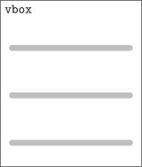

Graphical user interfaces¶
Grafische interfaces met PySide¶
Als je een grafische applicatie schrijft roep je functies aan van het besturingssysteem om vensters, knoppen, menu's en dergelijke te laten tekenen en te reageren op muisklikken en het toetsenbord. Het lastige daaraan is dat een applicatie voor MacOS heel anders geschreven moet worden dan één voor Linux of Windows. Om die reden zijn er verschillende cross-platform bibliotheken ontwikkeld die als het ware tussen het besturingssysteem en je applicatie komen te staan. Je kunt dezelfde applicatie maken voor alle besturingssystemen en de bibliotheek kiest welke functies aangeroepen moeten worden om een venster te tekenen. Het voordeel is duidelijk: je hoeft maar één applicatie te schrijven die overal werkt. Het nadeel is dat je niet écht gebruik kunt maken van alle functies en opties die het besturingssysteem biedt. Hier kiezen we voor de voordelen en gaan we gebruik maken van misschien wel de meest populaire optie: Qt.1 De bibliotheek PySide6 is de officiële Pythonbibliotheek.
Info
Je hebt voor de volgende opdrachten de volgende packages nodig in je virtual environment, of als dependency voor je uv project:
pyside6-essentialspyqtgraph
Dit wordt bij de opdrachten nog wel verteld, maar voor het overzicht staan ze ook hier.
Een minimale Qt-applicatie ziet er als volgt uit:
UserInterface class. De naam mag je zelf kiezen, zolang je maar aangeeft dat de class een subclass is van QtWidgets.QMainWindow, het hoofdvenster van je applicatie (voor meer informatie zie paragraaf subclasses). In het hoofdgedeelte van het programma — gedefinieerd in de functie main() — maak je eerst een instance van QtWidgets.QApplication.2 Ook maak je een instance van de eigen class en roep je de show()-method aan. Die heb je niet zelf geprogrammeerd; die zit in de parent class QMainWindow. Als laatste roep je de exec()-method aan van QApplication en de uitvoer daarvan (een exit code) geef je mee aan de functie sys.exit(). Dat betekent dat als het programma afsluit met een foutmelding, dat een foutcode wordt meegegeven aan het besturingssysteem. Iemand anders die een script schrijft kan die code afvangen en daar iets mee doen.
Een aantal elementen uit dit programma (sys.argv, sys.exit()) zijn strikt genomen niet noodzakelijk, maar wel good practice. Ook het schrijven van een main()-functie is niet strikt noodzakelijk, maar het maakt het wel makkelijk om straks een zogeheten entry point te hebben als je weer een applicatie wilt schrijven. In de pyproject.toml geef je dan aan dat je de main()-functie wilt aanroepen. Dat komt later.
Minimale GUI
oefenopdrachten maak je een example-gui.py aan en je zet daarin de Python code van bovenstaand voorbeeld. Je runt het bestand example-gui.py en krijgt een foutmelding. Je installeert het pakket pyside6-essentials in je virtual environment en runt je code nog een keer. Er verschijnt een leeg venster in beeld met als venstertitel python en de drie standaard vensterknoppen voor minimaliseren, maximaliseren en sluiten.
ECPC├──
pythondaq├──
oefenopdrachten ├──
example-gui.py└── •••
└── •••
Pseudo-code
import sys
from PySide6 import QtWidgets
# create subclass of QtWidgets.QMainWindow
def main():
# create instance of QtWidgets.QApplication with arguments from sys.argv
# create instance of subclass
# call show method of subclass
# get exit code with exec method of QApplication instance and give exit code to sys.exit()
# when run this script:
# run main function
Checkpunten
- Het virtual environment
oefenopdrachtenis geactiveerd - De code is volledig overgenomen
- Er verschijnt een leeg venster
Projecttraject
- Minimale GUI
- Parent class initialiseren
- Central widget toevoegen
- Tekstveld toevoegen
- Knoppen toevoegen
- Slots en signals
- Extra knoppen toevoegen
Elke keer als je een nieuwe Qt applicatie gaat schrijven kun je bovenstaand stukje code kopiëren en plakken. Als je dit programma draait heb je echter een klein leeg venster op het scherm, zonder elementen. Die elementen kun je op twee manieren toevoegen: door ze te programmeren of door het gebruik van een visueel ontwerp met Qt Designer. Beide zullen in de volgende secties toegelicht worden.
Een interface programmeren met PySide6¶
Je gaat nu eerst de eenvoudige interface programmeren die hieronder is weergegeven:
Je doet dat door de class UserInterface uit te breiden met widgets uit de QtWidgets-bibliotheek.
Het definiëren van layouts gebeurt in veruit de meeste opmaaksystemen met rechthoeken (Engels: boxes) die op verschillende manieren gestapeld worden — bijvoorbeeld naast elkaar, boven elkaar of op een rechthoekig grid. Zulke systemen zijn ook hiërarchisch: je stopt boxes in andere boxes.
De layout van bovenstaande screenshot is als volgt opgebouwd. Het hoofdelement van de grafische interface is de central widget:

De central widget krijgt een verticale layout die we vbox noemen:

In de verticale layout plaatsen we een textbox en een horizontale layout die we hbox noemen:

In de horizontale layout plaatsen we tweemaal een button:
Het stuk programma om bovenstaande layout op te bouwen geven we hieronder weer. We bespreken hierna de code regel voor regel.
__init__(). Helaas gaat dat niet zomaar. Je schrijft namelijk niet helemaal zelf een nieuwe class (class UserInterface), maar breidt de QMainWindow-class uit (class UserInterface(QtWidgets.QMainWindow)). Door dat te doen zijn er heel veel methods al voor jou gedefinieerd. Daar hoef je verder niet over na te denken, de interface werkt gewoon. Het gaat mis als jij zelf nieuwe methods gaat schrijven die dezelfde naam hebben. Stel dat de parent class
QMainWindow een method click_this_button() heeft. Als jouw class ook een method click_this_button() heeft, dan zal die worden aangeroepen in plaats van de method uit de parent class. Dat is handig als je de parent method wilt vervangen maar niet zo handig als je de parent method wilt aanvullen, zoals nodig is bij __init__(). Immers, je wilt jouw eigen class initialiseren, maar je wilt ook dat de parent class volledig wordt geïnitialiseerd.
De oplossing is gelukkig vrij eenvoudig: je kunt de __init__() van de parent class gewoon aanroepen en daarna je eigen ding doen. De Pythonfunctie super() verwijst altijd naar de parent class, dus met super().__init__() wordt de parent class volledig geïnitialiseerd. Dat is dus het eerste dat gedaan wordt in regel 10. Kijk voor meer informatie over super().__init__() in de paragraaf subclasses.
In de volgende opdrachten ga je zelf de hele applicatie opbouwen, zodat je precies weet wat in de code hierboven staat.
Parent class initialiseren
Je hebt gezien hoe je widgets aan de applicatie kunt toevoegen. Maar omdat het veel stappen in een keer zijn ga je de instructies stap voor stap volgen en steeds tussendoor testen. Je begint met het maken van een __init__()-method voor de class UserInterface en zorgt ervoor dat de parent class (QtWidgets.QMainWindow) volledig wordt geïnitialiseerd. Je runt example-gui.py en ziet dat er nog steeds een leeg venster wordt gestart. Je bent benieuwd of het initialiseren écht nodig is, daarom haal je de super()-aanroep weg en kijk je wat er gebeurd als je example-gui.py runt. Je zet super()-aanroep heel gauw weer terug.
Pseudo-code
import sys
from PySide6 import QtWidgets
# create subclass of QtWidgets.QMainWindow
# def __init__()
# initialise the parent class Qtwidgets.QMainWindow
def main():
# create instance of QtWidgets.QApplication with arguments from sys.argv
# create instance of subclass
# call show method of subclass
# get exit code with exec method of QApplication instance and give exit code to sys.exit()
# when run this script:
# run main function
Checkpunten
- Er is een
__init__()-method gemaakt voor de subclassUserInterface. - In de
__init__()-method wordt de parent class geïnitialiseerd (regel 10). - Er verschijnt een leeg venster.
Projecttraject
- Minimale GUI
- Parent class initialiseren
- Central widget toevoegen
- Tekstveld toevoegen
- Knoppen toevoegen
- Slots en signals
- Extra knoppen toevoegen
Verder heeft iedere applicatie een centrale widget nodig. Niet-centrale widgets zijn bijvoorbeeld een menubalk, knoppenbalk of statusbalk.
Central widget toevoegen
Nu de parent class wordt geïnitialiseerd kan je een widget aanmaken met QtWidgets.QWidget(). Je noemt deze widget central_widget. Deze widget stel je in als centrale widget met de method setCentralWidget() van de class QtWidgets.QMainWindow. Je runt example-gui.py en ziet dat er nog steeds een leeg venster wordt gestart.
Pseudo-code
import sys
from PySide6 import QtWidgets
# create subclass of QtWidgets.QMainWindow
# def __init__()
# initialise the parent class Qtwidgets.QMainWindow
# create central widget with QtWidgets.QWidget()
# set central widget
def main():
# create instance of QtWidgets.QApplication with arguments from sys.argv
# create instance of subclass
# call show method of subclass
# get exit code with exec method of QApplication instance and give exit code to sys.exit()
# when run this script:
# run main function
Checkpunten
- Er is een centrale widget gemaakt met
QtWidgets.QWidget()(regel 14). - De widget wordt als centrale widget ingesteld met
setCentralWidget()(regel 15). - De method
setCentralWidget()is afkomstig van de classQtWidgets.QMainWindowwelke geïnitialiseerd is, de method wordt daarom metself.setCentralWidget()aangeroepen. - Er verschijnt een leeg venster.
Projecttraject
- Minimale GUI
- Parent class initialiseren
- Central widget toevoegen
- Tekstveld toevoegen
- Knoppen toevoegen
- Slots en signals
- Extra knoppen toevoegen
Nu ga je layouts en widgets toevoegen. Layouts zorgen ervoor dat elementen netjes uitgelijnd worden. Je wilt het tekstveld en de knoppen onder elkaar zetten en maakt dus eerst een verticale layout. Aan die layout voeg je een textbox toe.
Tekstveld toevoegen
Omdat je het tekstveld en de knoppen onder elkaar wilt uitlijnen voeg je een verticale layout toe aan de central_widget. Je maakt een textbox aan en voegt deze toe aan de verticale layout. Je runt example-gui.pyen ziet een venster met een textbox verschijnen. Je typt een vrolijke tekst en sluit daarna het venster.
Pseudo-code
import sys
from PySide6 import QtWidgets
# create subclass of QtWidgets.QMainWindow
# def __init__()
# initialise the parent class Qtwidgets.QMainWindow
# create central widget with QtWidgets.QWidget()
# set central widget
# create vertical layout
# set layout of central widget as vertical layout
# create textbox
# add textbox to vertical layout
def main():
# create instance of QtWidgets.QApplication with arguments from sys.argv
# create instance of subclass
# call show method of subclass
# get exit code with exec method of QApplication instance and give exit code to sys.exit()
# when run this script:
# run main function
Checkpunten
- Er is een verticale layout gemaakt (regel 18).
- De
central_widgetkrijgt als layout een verticale layout (regel 19) - Er is een tekstveld gemaakt (regel 22).
- Het tekstveld (
QTextEdit) is toegevoegd aan de verticale layout (regel 23). - Er verschijnt een venster met een tekstveld waar je in kan typen
Projecttraject
- Minimale GUI
- Parent class initialiseren
- Central widget toevoegen
- Tekstveld toevoegen
- Knoppen toevoegen
- Slots en signals
- Extra knoppen toevoegen
De knoppen zelf plaats je straks in een horizontale layout, dus die voeg je ook toe aan de vbox. En je maakt de layout compleet door knoppen toe te voegen aan de hbox.
Knoppen toevoegen
Omdat de knoppen naast elkaar moeten komen te staan voeg je een horizontale layout toe aan de verticale layout. Je maakt een clear-knop en een add text-knop en voegt deze toe aan de horizontale layout. Je runt example-gui.pyen ziet een venster met een tekstveld verschijnen met daaronder twee knoppen. Je drukt verwoed op de knoppen maar er gebeurt niets.3
Pseudo-code
import sys
from PySide6 import QtWidgets
# create subclass of QtWidgets.QMainWindow
# def __init__()
# initialise the parent class Qtwidgets.QMainWindow
# create central widget with QtWidgets.QWidget()
# set central widget
# create vertical layout
# set layout of central widget as vertical layout
# create textbox
# add textbox to vertical layout
# create horizontal layout
# add horizontal layout to vertical layout
# create clear_button
# add clear button to horizontal layout
# create add_text_button
# add add_text_button to horizontal layout
def main():
# create instance of QtWidgets.QApplication with arguments from sys.argv
# create instance of subclass
# call show method of subclass
# get exit code with exec method of QApplication instance and give exit code to sys.exit()
# when run this script:
# run main function
Checkpunten
- Er is een horizontale layout aangemaakt (regel 24).
- De horizontale layout is toegevoegd aan de verticale layout (regel 25).
- Er is een
clear-knop enadd text-knop aangemaakt met daarop respectievelijk de tekst "Clear" en "Add text" (regels 27 en 29). - De knoppen zijn beide toegevoegd aan de horizontale layout (regel 28 en 30).
- Als je op de knoppen drukt, gebeurt er niets.
Projecttraject
- Minimale GUI
- Parent class initialiseren
- Central widget toevoegen
- Tekstveld toevoegen
- Knoppen toevoegen
- Slots en signals
- Extra knoppen toevoegen
Info
Widgets zoals knoppen voeg je toe met addWidget(). Layouts voeg je toe aan andere layouts met addLayout().
De horizontale layout (voor de knoppen) moet je expliciet toevoegen aan de verticale layout zodat deze layout netjes verticaal onder het tekstveld verschijnt.
Als laatste verbindt je de knoppen aan functies. Zodra je op een knop drukt wordt er een zogeheten signal afgegeven. Die kun je verbinden met een slot. Er zijn verschillende soorten signalen. Het drukken op een knop zorgt voor een clicked signal, het veranderen van een getal in een keuzevenster geeft een changed signal. In dit geval verbind je één knop direct met een al bestaande method van het tekstveld clear() en de andere knop met een eigen method add_button_clicked(). De naam is geheel vrij te kiezen, maar boven de functiedefinitie moet je wel de @Slot()-decorator gebruiken (voor meer informatie over decorators zie paragraaf Decorators). PySide kan dan net wat efficiënter werken.
Slots en signals
Je gaat functionaliteit aan de knoppen verbinden. Je verbindt de clear-knop aan de clear()-method van textedit. Je maakt een eigen Slot met de naam add_text_button_clicked die een tekst aan het tekstveld toevoegt. Je vindt de tekst "You clicked me." maar suf en bedenkt zelf een andere leuke tekst. Je runt example-gui.py en ziet een venster met een tekstveld verschijnen met daaronder twee knoppen. Je drukt op "Add text" en er verschijnt tekst in het tekstveld, daarna druk je op "Clear" en de tekst verdwijnt.
() ontbreken bij clear en add_text_button_clicked
Bij het verbinden van het clicked-signaal met clicked.connect() geef je aan connect de methods clear en add_text_button_clicked mee zonder deze aan te roepen (dat gebeurt later). Concreet betekent dit dat je de haakjes weglaat (regel 33 en 34).
Pseudo-code
import sys
from PySide6.QtCore import Slot
from PySide6 import QtWidgets
# create subclass of QtWidgets.QMainWindow
# def __init__()
# initialise the parent class Qtwidgets.QMainWindow
# create central widget with QtWidgets.QWidget()
# set central widget
# create vertical layout
# set layout of central widget as vertical layout
# create textbox
# add textbox to vertical layout
# create horizontal layout
# add horizontal layout to vertical layout
# create clear_button
# add clear button to horizontal layout
# create add_text_button
# add add_text_button to horizontal layout
# connect clear_button to clear method of textedit
# connect add_text_button to add_text_button_clicked
# decorate method with Slot function
# def add_text_button_clicked
# add text to textedit
def main():
# create instance of QtWidgets.QApplication with arguments from sys.argv
# create instance of subclass
# call show method of subclass
# get exit code with exec method of QApplication instance and give exit code to sys.exit()
# when run this script:
# run main function
Checkpunten
- Het
clicked-signaal vanclear_buttonis doorconnectverbonden met declear()-method vantextedit(regel 33). - Het
clicked-signaal vanadd_text_buttonis doorconnectverbonden met een eigen methodadd_text_button_clicked(regel 34). - De method
add_text_button_clickedis voorzien van een decorator@Slot(). Slot is geschreven met een hoofdletter. Aan het einde volgen ronde haken, omdat Slot een functie is (regel 36). - De
Slot-functie is geïmporteerd vanuit dePySide6.QtCore(regel 4). - De method
add_text_button_clickedvoegt metappendeen tekst toe aantextedit(regel 38). - Drukken op de knop "Add text" zorgt voor het verschijnen van tekst in het tekstveld.
- Drukken op de knop "Clear" zorgt ervoor dat alle tekst in het tekstveld verdwijnt.
Projecttraject
- Minimale GUI
- Parent class initialiseren
- Central widget toevoegen
- Tekstveld toevoegen
- Knoppen toevoegen
- Slots en signals
- Extra knoppen toevoegen
Er zijn veel verschillende widgets met eigen methods en signals. We hebben de handigste voor je verzameld in de compacte PySide6 documentatie. De methods komen bij Qt4 vandaan. Qt zelf bestaat uit C++ code en PySide6 vertaalt alle methods en dergelijke letterlijk naar Python. Vandaar ook de methodnaam addWidget() in plaats van add_widget(). In C++ en Java is het gebruikelijk om functies CamelCase namen te geven als kijkDitIsEenMooieFunctie(), maar in Python zijn we snake_case gewend, als in kijk_dit_is_een_mooie_functie().
Volgorde layout aanpassen
De volgorde waarin je layouts en widgets toevoegt bepaalt het uiterlijk van de grafische interface. Verander de code om de layout aan te passen. Zet bijvoorbeeld de knoppen boven de textbox of zet de knoppen onder elkaar en naast de textbox.
Extra knoppen toevoegen
Nu de minimale GUI werkt, wil je extra knoppen toevoegen. Je begint met een knop Hello die de tekst "Hello, world!" aan het tekstveld toevoegt. Je runt example-gui.py en ziet dat de knop werkt.
Daarna voeg je een quit-knop toe die onder de andere knoppen staat. Het signaal van deze knop verbind je met de method self.close() zodat de applicatie wordt afgesloten. Je runt example-gui.py, drukt nog een paar keer op de hello-knop en daarna op de quit-knop. Het venster is gesloten, de opdracht is voltooid
Pseudo-code
Checkpunten
- De
add text- enclear-knoppen werken nog zoals verwacht. - Drukken op de
hello-knop voegt de text "Hello, world!" toe aan het tekstveld. - De
quit-knop staat onder de andere knoppen. - Drukken op de
quit-knop sluit het venster.
Projecttraject
- Minimale GUI
- Parent class initialiseren
- Central widget toevoegen
- Tekstveld toevoegen
- Knoppen toevoegen
- Slots en signals
- Extra knoppen toevoegen
Number display
Add value drukt, wordt het getal in het tekstveld geprint.
ECPC├──
pythondaq├──
oefenopdrachten ├──
number-display-gui.py└── •••
└── •••
Pseudo-code
Checkpunten
- In het ontwerp staan de PushButton en de SpinBox onder het tekstveld en naast elkaar.
- Op de PushButton staat de tekst
Add value. - Wanneer je op de knop
Add valuedrukt, wordt de waarde uit de SpinBox aan het tekstveld toegevoegd. - Wanneer je het getal in de SpinBox verandert naar 14 en daarna op
Add valuedrukt, wordt het getal 14 toegevoegd aan het tekstveld. - De minimale waarde van de SpinBox staat ingesteld op 1, de maximale waarde op 28.
- Wanneer het venster wordt vergroot schalen het tekstveld en de knoppen mee.
Projecttracject
- Number display
Compacte PySide6 documentatie¶
De documentatie van PySide65 is niet super-intuïtief. Daarom hebben we speciaal voor jullie een Compacte PySide6 documentatie📄 geschreven. Daarin kun je een lijst van widgets vinden met de meest handige methods en signals. De documentatie is dus niet compleet maar genoeg voor een simpele GUI. Een overzicht van alle classes gedocumenteerd in de compacte documentatie vind je hieronder.
Subclasses van QLayout:
-
QHBoxLayout: Beheert een horizontale indeling van widgets. Meer info. -
QVBoxLayout: Beheert een verticale indeling van widgets. Meer info. -
QFormLayout: Beheert een indeling waarbij de ruimte wordt verdeeld in een linkerkolom met labels en een rechterkolom met widgets. Meer info.
Subclasses van QWidgets:
-
QApplication: Beheert de controleflow en hoofdinstellingen van de GUI-applicatie. Meer info. -
QMainWindow: Biedt een framework voor het bouwen van de gebruikersinterface van een applicatie. Meer info. -
QGroupBox: Biedt een frame, een titel erboven, en kan verschillende andere widgets binnen zichzelf weergeven. Meer info. -
QTextEdit: Geeft tekst weer en stelt de gebruiker in staat om deze te bewerken. Meer info. -
QCheckBox: Schakelknop met een checkbox-indicator. Meer info. -
QLabel: Een widget die tekst weergeeft. Meer info. -
QComboBox: Een widget waarmee de gebruiker een keuze kan maken uit een lijst met opties. Meer info. -
QSpinBox: Een widget waarmee de gebruiker een geheel nummer kan kiezen uit een bereik. Meer info. -
QDoubleSpinBox: Een widget waarmee de gebruiker een komma getal kan kiezen uit een bereik. Meer info. -
QPushButton: Een knop die door de gebruiker kan worden ingedrukt. Meer info. -
QLineEdit: Een widget waarmee de gebruiker een enkele regel platte tekst kan invoeren en bewerken. Meer info. -
QFileDialog: Biedt een dialoogvenster waarmee de gebruiker bestanden of mappen kan selecteren. Meer info.
Functieplotter¶
Later in dit hoofdstuk ga je voor jouw pythondaq applicatie toewerken naar het weergeven van data op een scherm. Deze data wil je dan natuurlijk plotten. In de volgende opdrachten ga je eerst voor een kleiner project hiermee oefenen. 
Je bent bekend met matplotlib en dat kan ook ingebouwd worden in Qt-applicaties. Helaas is matplotlib voor het gebruik in interactieve interfaces nogal traag zodra het te maken krijgt met meer data. We kiezen daarom voor een populair alternatief: PyQtGraph. Eén nadeel: de documentatie is niet fantastisch. Het geeft dus niets als je ergens niet uitkomt. Vraag op tijd hulp aan de assistent of een staflid.
De plotter als script¶
Om PyQtGraph te importeren en globale opties in te stellen moet je de package pyqtgraph installeren en bovenaan in jouw programma het volgende schrijven:
import pyqtgraph as pg
# PyQtGraph global options
pg.setConfigOption("background", "w")
pg.setConfigOption("foreground", "k")
Gebruik de volgende regel om een plot widget te krijgen in de __init__():
Om daadwerkelijk een functie te plotten kun je onderstaande code als basis gebruiken. Pas de code zo aan dat je uiteindelijk jouw functie op het scherm kan weergeven.
import numpy as np
class UserInterface(QtWidgets.QMainWindow):
...
def plot(self):
x = np.linspace(-np.pi, np.pi, 100)
self.plot_widget.plot(x, np.sin(x), symbol=None, pen={"color": "m", "width": 5})
self.plot_widget.setLabel("left", "y-axis [units]")
self.plot_widget.setLabel("bottom", "x-axis [units]")
symbol en pen om te zien wat ze doen. Leeg maken kan met self.plot_widget.clear().
Functionplotter: plot
ECPC map. Geef de repository de naam functionplotter en open de repository in Visual Studio Code. Maak een uv project en een bestand app.py in je package. Schrijf in dit bestand je code. Bekijk de pyproject.toml en zorg dat er een commando is aangemaakt om de applicatie te starten. Synchroniseer het environment en voer het commando uit om de applicatie te starten. Als je applicatie af is verschijnt er een scherm met een plot waarin de functie $\sin(x)$ in het domein $(0, 2\pi)$ is weergegeven. Een golfje van trots gaat door je heen en je gaat door naar de volgende opdracht.
ECPC├──
pythondaq├──
functionplotter ├──
src└──
functionplotter├──
__init__.py└──
app.py├──
pyproject.toml└── •••
└── •••
Pseudo-code
Checkpunten:
- Er is een repository
functionplotter. - Er is een commando om de applicatie te starten.
- De applicatie laat een $\sin(x)$ plot zien in het domein $(0, 2\pi)$.
- De applicatie werkt ook nog steeds na
uv sync. Met andere woorden: de benodigde packages zijn als dependencies opgegeven in depyproject.toml.
Projecttraject
- Functionplotter: plot
- Functionplotter: widgets
Functionplotter: widgets
Voer opnieuw het commando uit om de applicatie functionplotter te starten. Dit keer zorg je dat de applicatie de mogelijkheid krijgt om het domein van de plot aan te passen. Je ziet dan de sinusplot veranderen wanneer je de startwaarde verhoogd. Je kunt de startwaarde ook naar beneden aanpassen. Hetzelfde geldt voor de stopwaarde. Dan maak je nog een widget om het aantal punten (num) te kiezen waarmee de sinus wordt geplot. Speel eens met de widget en zie de sinus van hoekig naar mooi glad veranderen. Steeds als je een waarde aanpast moet de functie automatisch opnieuw geplot geworden.
Pseudo-code
Checkpunten:
- Het is mogelijk om de start waarde aan te passen.
- Het is mogelijk om de stop waarde aan te passen.
- Het is mogelijk om het aantal punten te kiezen waarmee de sinus functie wordt geplot.
- Na het aanpassen van een waarde wordt de plot automatisch opnieuw geplot.
Projecttraject
- Functionplotter: plot
- Functionplotter: widgets
Functionplotter: functie kiezen drop-down menu
Gebruik een QComboBox om de functie te kunnen kiezen. Je moet hem leeg toevoegen aan je interface en vult hem vanuit je programma. Zoek de widget op in de documentatie om uit te zoeken welke functie je moet gebruiken om keuzemogelijkheden toe te voegen en welk signaal je moet koppelen om te zorgen dat de plot opnieuw wordt uitgevoerd als je de functie aanpast. Geef de gebruiker de keuzes $\sin(x)$, $\cos(x)$, $\tan(x)$ en $\exp(x)$.
Functionplotter: meer functies
Voeg aan de functiekiezer de functies $x$, $x^2$, $x^3$, en $\frac{1}{x}$ toe. Je kunt daarvoor lambda functions gebruiken, maar dat is niet per se nodig.
Functionplotter: functies typen
Vervang de functiekiezer door een tekstveld waarin de gebruiker zelf functies kan typen zoals x ** 2, sin(x) of 1 / sqrt(x + 1). Gebruik daarvoor het asteval package.13 Documentatie vind je op https://newville.github.io/asteval/.
Waarschuwing
Gebruik nooit zomaar eval() op een string die iemand anders aanlevert. Anders kan iemand met typen in een tekstveld of het inlezen van een tekstbestand je computer wissen bijvoorbeeld, of malware installeren. Als je eval() wilt gebruiken, lees dan de sectie Minimizing the Security Issues of eval() in Python eval(): Evaluate Expressions Dynamically.14 Maar veel makkelijker is om asteval te gebruiken.
Een interface ontwerpen met Qt Designer¶
Bij het ontwerpen van een grafische interface kan het fijn zijn om het ontwerp steeds voor je te zien als je iets wilt aanpassen. Misschien wil je de knoppen toch onder elkaar, of een slider gebruiken in plaats van een spinbox. Je kunt natuurlijk steeds je code aanpassen en opnieuw runnen, maar PySide6 heeft ook een drag-and-drop applicatie 'Designer' gemaakt. Je gebruikt Designer om het uiterlijk van je applicatie vorm te geven, de functionaliteit voeg je vervolgens toe in je code.
Designer kan (bijna) alles wat je ook met programmeren kan, daarom kan het programma op het eerste gezicht wat onoverzichtelijk overkomen. In onderstaande video's nemen we je stap voor stap mee op een tour door Designer. Aan het eind heb je de basisinformatie over Designer en kan je de minimale gui die je eerder geprogrameerd hebt, ook maken met Designer.
Info
Druk in de video's op het vierkant rechtsboven om ze in volledig scherm te bekijken.
Designer: opstarten
Bekijk bovenstaande video. Start Designer op met het commando pyside6-designer in een terminal. Open een template voor een MainWindow en controleer dat bij jou in de object inspector dezelfde widgets staan als in de video hierboven.
Test-code
(functionplotter) > pyside6-designer
[start Designer app]
Checkpunten:
- De
MainWindowbevat eencentral widget, menubar en statusbar.
Projecttraject
- Designer: opstarten
- Designer: layout toevoegen aan centralwidget
- Designer: eigenschappen widgets aanpassen
- Designer: De .ui vertalen naar .py
- Designer: ontwerp importeren
- Designer: slots en signals toevoegen
Laten we kijken hoe we widgets toevoegen en de central widget een layout geven in Designer.
Designer: layout toevoegen aan centralwidget
Bekijk bovenstaande video. Voeg zelf ook een TextEdit toe en geef de central widget een verticale layout. Voeg onder de TextEdit een horizontale layout toe.
Checkpunten:
- In de object inspector heeft de
centralwidgetgeen rood rondje in het icoon ervoor staan. - Er is een
TextEditen een horizontale layout aan decentralwidgettoegevoegd. - In het ontwerp staat de horizontale layout onder de
TextEdit.
Projecttraject
- Designer: opstarten
- Designer: layout toevoegen aan centralwidget
- Designer: eigenschappen widgets aanpassen
- Designer: De .ui vertalen naar .py
- Designer: ontwerp importeren
- Designer: slots en signals toevoegen
In de volgende video kun je zien hoe je gemakkelijk een widget aan de horizontale layout toevoegd en hoe je de eigenschappen van de widgets aanpast.
Designer: eigenschappen widgets aanpassen
Bekijk bovenstaande video. Voeg zelf ook een PushButton en een SpinBox toe aan de horizontale layout. Pas de tekst op de PushButton aan naar Add value. Zorg dat de SpinBox alleen waardes tussen 1 en 28 kan aannemen. Pas de objectName aan van de TextEdit naar textedit, van PushButton naar add_value_button en van SpinBox naar value.
Checkpunten:
- In het ontwerp staan de PushButton en de SpinBox onder het tekstveld en naast elkaar.
- Op de
PushButtonstaat de tekstAdd value. - De minimale waarde van de SpinBox staat ingesteld op 1, de maximale waarde op 28.
- De
objectNamevan deTextEditistextedit, met kleine letters. - De
objectNamevan dePushButtonisadd_value_button. - De
objectNamevan deSpinBoxisvalue.
Projecttraject
- Designer: opstarten
- Designer: layout toevoegen aan centralwidget
- Designer: eigenschappen widgets aanpassen
- Designer: De .ui vertalen naar .py
- Designer: ontwerp importeren
- Designer: slots en signals toevoegen
Om het ontwerp te kunnen gebruiken moet je het ontwerp opslaan en vertalen naar een Pythonbestand met een class die je importeert in je eigen programma.
Designer: de .ui vertalen naar .py
number_display_app.ui. In een terminal in Visual Studio Code navigeer je naar dezelfde map waarin number_display_app.ui staat.6 Gebruik de optie --output van pyside6-uic om het bestand number_display_app.ui om te zetten naar het bestand ui_number_display_app.py.
ECPC├──
oefenopdrachten├──
number-display-gui.py├──
number_display_app.ui└── •••
└── •••
Wijzigingen in het ontwerp
Het omzetten van het .ui-bestand naar een .py-bestand moet je elke keer doen als je in Designer iets wijzigt (en opslaat). Gebruik de Up-toets om oude commando's terug te halen. Dat scheelt typewerk. Later, met uv, zullen we dit eenvoudiger maken.
Test-code
(oefenopdrachten) > pyside6-uic number_display_app.ui --output ui_number_display_app.pyECPC├──oefenopdrachten├──number-display-gui.py├──number_display_app.ui├──ui_number_display_app.py└── ••• └── •••
Checkpunten:
- Er is een bestand
ui_number_display_app.pybijgekomen. - In het bestand
ui_number_display_app.pystaat een classUi_MainWindow
Projecttraject
- Designer: opstarten
- Designer: layout toevoegen aan centralwidget
- Designer: eigenschappen widgets aanpassen
- Designer: De .ui vertalen naar .py
- Designer: ontwerp importeren
- Designer: slots en signals toevoegen
Designer: ontwerp importeren
Maak een nieuw pythonbestand number-display-gui-designer.py, kopieer de code van de vorige opdracht number display en vervang de volledige class door:
from ui_number_display_app import Ui_MainWindow
class UserInterface(QtWidgets.QMainWindow):
def __init__(self):
super().__init__()
self.ui = Ui_MainWindow()
self.ui.setupUi(self)
self.ui.add_value_button.clicked.connect(self.add_value_button_clicked)
@Slot()
def add_value_button_clicked(self):
self.ui.textedit.append("You've clicked the 'Add value' button")
self.ui.add_value_button; die naam hebben we in Designer aan de knop gegeven. De namen van alle objecten in Designer zijn daarna beschikbaar in onze code om bijvoorbeeld de signalen te koppelen.
self.add_value_button wordt self.ui.add_value_button
Merk op dat we nu niet meer self.add_value_button gebruiken maar self.ui.add_value_button. Alle widgets komen op deze manier onder een .ui-object te hangen.
Pseudo-code
import sys
from PySide6.QtCore import Slot
from PySide6 import QtWidgets
from ui_number_display_app import Ui_MainWindow
# create subclass of QtWidgets.QMainWindow
# def __init__()
# initialise the parent class Qtwidgets.QMainWindow
# create an instance of the class Ui_MainWindow
# Setup the UI with the method setupUi(self) from the class Ui_MainWindow
# connect add_value_button to add_value_button_clicked
# decorate method with Slot function
# def add_button_clicked
# add text to textedit
def main():
# create instance of QtWidgets.QApplication with arguments from sys.argv
# create instance of subclass
# call show method of subclass
# get exit code with exec method of QApplication instance and give exit code to sys.exit()
# when run this script:
# run main function
Checkpunten:
- De class
Ui_MainWindowwordt geïmporteerd uitui_number_display_app.py. - De widgets worden aangeroepen met
self.uiervoor.
Projecttraject
- Designer: opstarten
- Designer: layout toevoegen aan centralwidget
- Designer: eigenschappen widgets aanpassen
- Designer: De .ui vertalen naar .py
- Designer: ontwerp importeren
- Designer: slots en signals toevoegen
Designer: slots en signals toevoegen
Pas de code aan zodat de waarde van de SpinBox aan de textedit wordt toegevoegd. Voeg daarna in Designer een knop Quit toe onder de SpinBox en de PushButton. Zorg dat het venster sluit wanneer je op de knop Quit drukt.
Pseudo-code
import sys
from PySide6.QtCore import Slot
from PySide6 import QtWidgets
from ui_number_display_app import Ui_MainWindow
# create subclass of QtWidgets.QMainWindow
# def __init__()
# initialise the parent class Qtwidgets.QMainWindow
# create an instance of the class Ui_MainWindow
# Setup the UI with the method setupUi(self) from the class Ui_MainWindow
# connect add_value_button to add_value_button_clicked
# connect Quit button to self.close()
# decorate method with Slot function
# def add_value_button_clicked
# Add value to textedit
def main():
# create instance of QtWidgets.QApplication with arguments from sys.argv
# create instance of subclass
# call show method of subclass
# get exit code with exec method of QApplication instance and give exit code to sys.exit()
# when run this script:
# run main function
Checkpunten:
- Wanneer je op de knop
Add valuedrukt wordt de waarde uit de SpinBox aan de textedit toegevoegd. - Wanneer je het getal in de SpinBox veranderd naar 14 en daarna op
Add valuedrukt wordt het getal 14 toegevoegd aan de textedit. - Onder de SpinBox en de knop
Add valuestaat een knopQuit. - Wanneer je op de knop
Quitdrukt sluit de applicatie.
Projecttraject
- Designer: opstarten
- Designer: layout toevoegen aan centralwidget
- Designer: eigenschappen widgets aanpassen
- Designer: De .ui vertalen naar .py
- Designer: ontwerp importeren
- Designer: slots en signals toevoegen
Een grafische interface voor ons experiment¶
In het vorige hoofdstuk hebben we een tekst-interface geschreven voor ons experiment. We gaan nu een grafische interface schrijven voor hetzelfde experiment.
We hebben tot nu toe veel moeite gedaan om onze code te splitsen volgens het MVC-model: werken in laagjes, goed nadenken over wat waar hoort. Als dat netjes gelukt is kunnen we relatief makkelijk één van die laagjes vervangen. We kunnen de ArduinoVISADevice vervangen door een RaspberryPiDevice of een PicoScopeDevice 7. Ook kunnen we een nieuwe applicatie schrijven voor ons bestaande experiment. We hoeven dan alleen een extra view te schrijven (de interface met de gebruiker) en de rest kunnen we hergebruiken. Misschien dat we hier en daar iets willen aanpassen maar zorg er dan voor dat je oude applicatie nog steeds werkt!
We gaan nu — in stapjes — een grafische applicatie schrijven voor ons experiment.
Ga je programmeren of gebruik je Designer?
Je mag zelf kiezen of je de grafische interface gaat ontwerpen met Designer of dat je hem volledig programmeert. Als je kiest om Designer te gebruiken, staan hieronder een paar handige tips en trucs.
Plotwidget toevoegen in Designer¶
Voeg als volgt een plot widget toe in Designer:
- Voeg aan je interface een Graphics View toe;
- Klik er op om hem te selecteren en klik daarna op de rechtermuistoets;
- Kies voor Promote To ...;
- Bij Promoted class name vul je in
PlotWidgeten bij Header file vul je inpyqtgraph(zonder.haan het eind); - Dan klik je op Add en vervolgens op Promote.
De stappen zijn weergegeven in onderstaand screenshot. Bij de rode pijl vind je Graphics View en in het rode kader staat wat je moet invullen om te promoten:

Nu je dit een keer gedaan hebt kun je voortaan op een Graphics View meteen kiezen voor Promote to > PlotWidget en hoef je niets meer in te typen. Vergeet niet je widget nog even een handige naam te geven, bijvoorbeeld plot_widget.
Commando toevoegen om .ui te vertalen naar .py¶
Als je Designer gaat gebruiken voor de grafische interface dan is het lastig dat je steeds pyside-uic moet aanroepen en moet zorgen dat je in de goede directory staat. We kunnen met uv taken aanmaken die je met een eenvoudig commando kunt laten uitvoeren. Die taken zijn alleen beschikbaar tijdens het ontwikkelen van je applicatie. Doe dit als volgt:
- Installeer Poe the Poet — een zogeheten task runner — globaal met: We geven hiermee aan dat we dit package willen kunnen aanroepen vanuit de terminal, ongeacht in welke map of in welk virtual environment we zitten.
- Voeg aan je
pyproject.tomlhet volgende toe — uitgaande van de mappenstructuur in depythondaqpackage enmainwindow.uials naam van je.ui-bestand:Je kunt binnen de driedubbele aanhalingstekens meerdere regels toevoegen als je meerdere[tool.poe.tasks.compile] shell = """ pyside6-uic src/pythondaq/mainwindow.ui --output src/pythondaq/ui_mainwindow.py """ interpreter = ["posix", "powershell"].ui-bestanden hebt — voor ieder bestand een regel. - In bovenstaande regels is de naam na
tool.poe.tasksde naam van de taak — in dit geval duscompile. Je kunt die naam zelf kiezen en vervolgens gebruiken om de taak uit te voeren in de terminal: En dat gaat een stuk sneller dan die langepyside-uic-regel onthouden en intypen!
Pythondaq: leeg venster
pythondaq applicatie. Maak daarvoor een gui.py waarin een leeg GUI venster wordt gemaakt. Zorg dat het lege venster ook wordt getoond zodra je een commando in de terminal intypt.
De gebruiker test de GUI met de volgende handelingen. De gebruiker maakt een nieuw virtual environment aan . De gebruiker installeert de Pythondaq package met uv sync . De gebruiker kijkt in de pyproject.toml wat het commando is om de GUI op te starten. De gebruiker typte het commando in de terminal en ziet een leeg venster verschijnen.
ECPC├──
pythondaq├──
src└──
pythondaq├──
gui.py└── •••
└── •••
└── •••
Checkpunten:
- Het uitvoeren van een commando zorgt ervoor dat een leeg venster wordt getoond.
- De GUI werkt ook na het installeren van de package
pythondaqmet uv in een nieuw virtual environment met Python.
Projecttraject
- Pythondaq: leeg venster
- Pythondaq: plot scan
- Pythondaq: widgets
- Pythondaq: save
- Pythondaq: selecteer Arduino
Pythondaq: plot scan
Pas de GUI aan zodat de applicatie een scan uitvoerd en de metingen in een plot laat zien binnen het venster. Voor het gemak mag je de poortnaam, start- en stopwaardes e.d. hard coded
in je script zetten. Later ga je ervoor zorgen dat de gebruiker alles kan instellen en zelf een scan kan starten, maar dat komt straks wel.
De gebruiker test de GUI met de volgende handelingen. De gebruiker maakt een nieuw virtual environment aan . De gebruiker installeert de Pythondaq package met uv sync . De gebruiker kijkt in de pyproject.toml wat het commando is om de GUI op te starten. De gebruiker typte het commando in de terminal en ziet dat het LEDje gaat branden. Niet veel later ziet de gebruiker een grafiek met metingen verschijnen in de GUI.
Foutenvlaggen plotten
Foutenvlaggen toevoegen aan een pyqtgraph is helaas iets minder intuitief dan bij matplotlib. Met breedte en hoogte geef je aan hoe groot de vlaggen zijn, de vlag is 2 keer zo hoog of breed als de onzekerheid. Samen met de $x$ en $y$ data maak je dan een ErrorBarItem aan die je expliciet toevoegt aan de plot. Let op: x, y, x_err en y_err moeten NumPy arrays zijn of, en dat geldt alleen voor de errors, een vast getal. Gewone lijsten werken helaas niet.
Checkpunten:
- Het uitvoeren van het commando zorgt ervoor dat een scan wordt gestart.
- Het LED lampje gaat branden.
- De resultaten van de meting worden geplot in het venster.
Projecttraject
- Pythondaq: leeg venster
- Pythondaq: plot scan
- Pythondaq: widgets
- Pythondaq: save
- Pythondaq: selecteer Arduino
Pythondaq: widgets
Pas de GUI aan zodat de applicatie opstart met een lege plot en widgets om de start- en stopwaardes, en het aantal metingen aan te passen en een startknop waarmee een (nieuwe) meting wordt uitgevoerd. De gebruiker test de GUI met de volgende handelingen. De gebruiker typte het commando in de terminal en er verschijnt een GUI met daarin een lege plot. De gebruiker vult verschillende waardes in voor de start- en stopwaardes en het aantal metingen en drukt op de startknop. De gebruiker ziet dat het LEDje gaat branden. Niet veel later ziet de gebruiker een grafiek met metingen verschijnen in de GUI.
Pseudo-code
Checkpunten:
- De applicatie start op met een lege plot.
- In de applicatie kan de startwaarde in volt worden aangepast.
- In de applicatie kan de stopwaarde in volt worden aangepast.
- In de applicatie kan het aantal metingen worden aangepast.
- Druk op de startknop laat een meting starten.
Projecttraject
- Pythondaq: leeg venster
- Pythondaq: plot scan
- Pythondaq: widgets
- Pythondaq: save
- Pythondaq: selecteer Arduino
Bewaren van meetgegevens¶
Je zou na iedere meting de gegevens automatisch kunnen wegschrijven naar bestanden zonder dat de gebruiker nog iets kan kiezen, maar je kunt ook gebruik maken van een Save-knop en dialoogvensters. Je kunt de knop koppelen aan een method save_data() en daarin de volgende regel opnemen:
De functie getSaveFileName() opent een dialoogvenster om een bestand op te slaan. Vanwege het filter argument geeft het venster (op sommige besturingssystemen) alleen CSV-bestanden weer. In elk geval geldt op alle besturingssystemen dat als de gebruiker als naam metingen intypt, dat het filterargument ervoor zorgt dat er automatisch .csv achter geplakt wordt.8 De functie geeft twee variabelen terug: filename en filter, die je zelf hebt meegegeven in bovenstaande aanroep. Die laatste kenden we dus al en gooien we weg met behulp van de weggooivariabele _.
Het enige dat het dialoogvenster doet is de gebruiker laten kiezen waar en onder welke naam het bestand moet worden opgeslagen. Je krijgt echt alleen een pad en bestandsnaam terug, de data is niet opgeslagen en het bestand is niet aangemaakt. De variabele filename is echt niets anders dan een bestandsnaam, bijvoorbeeld: /Users/david/LED-rood.csv. Nadat je die bestandsnaam gekregen hebt moet je dus zelf nog code schrijven zodat het CSV-bestand wordt opgeslagen onder die naam.
Pythondaq: save
Pas de GUI aan zodat de applicatie de metingen kan wegschrijven naar een csv-bestand.
De gebruiker test de GUI met de volgende handelingen. De gebruiker typte het commando in de terminal en er verschijnt een GUI met daarin een lege plot. De gebruiker vult verschillende waardes in voor de start- en stopwaardes en het aantal metingen en drukt op de startknop. De gebruiker ziet dat het LEDje gaat branden. Niet veel later ziet de gebruiker een grafiek met metingen verschijnen in de GUI. De gebruiker ziet in de GUI een Save-knop en klikt daarop. Er vershijnt een dialoogvenster. De gebruiker kiest een locatie en typt een bestandsnaam en klikt op Save (of Opslaan). De gebruiker gaat op de computer naar de locatie waar het bestand opgeslagen zou zijn. De gebruiker opent het bestand en ziet de metingen staan.
Pseudo-code
Checkpunten:
- Druk op de knop
Saveopent een dialoogvenster. - De metingen worden opgeslagen als csv-bestand op de gegeven locatie en onder de gegeven bestandsnaam.
Projecttraject
- Pythondaq: leeg venster
- Pythondaq: plot scan
- Pythondaq: widgets
- Pythondaq: save
- Pythondaq: selecteer Arduino
Menu's, taak- en statusbalken
Menu's, taak- en statusbalken¶
Je kunt je grafische applicatie volledig optuigen met menu's of taakbalken. Ook kun je onderin je applicatie met een statusbalk weergeven wat de status is: gereed, aan het meten, foutcode, etc. Dat valt buiten het bestek van deze cursus, maar een mooie referentie is PySide6 Toolbars & Menus — QAction.15 Als je vaker grafische applicaties wilt gaan maken dan moet je dat zeker eens doornemen!
Pythondaq: statusbalk
Maak een statusbalk die aangeeft wat de identificatiestring is van het device dat geselecteerd is. Maak ook een menu waarmee je een CSV-bestand kunt opslaan en een nieuwe meting kunt starten. Let op: je hebt dan een menu-item én een knop die dezelfde method aanroepen. Je hoeft geen dubbele code te schrijven, maar moet de save_data()-method wel twee keer verbinden.
Selecteer de Arduino¶
Je hebt nu waarschijnlijk nog de poortnaam van de Arduino in je code gedefinieerd als vaste waarde. Dat betekent dat als je de code deelt met iemand anders — bijvoorbeeld wanneer je de code inlevert op Canvas of wanneer je je experiment op een labcomputer wilt draaien — je het risico loopt dat je applicatie crasht omdat de Arduino aan een andere poort hangt. Zeker bij de overstap van Windows naar MacOS of Linux, of andersom! Je kunt dit op twee manieren oplossen:
- Je maakt een keuzemenu waarmee de gebruiker de Arduino kan selecteren;
- Je probeert de Arduino te detecteren op één van de poorten. De gebruiker hoeft dan niet te weten welke poort dat zou kunnen zijn. Het werkt dan vanzelf!
Je kunt je voorstellen dat mogelijkheid 2 de voorkeur heeft! Helaas is dit moeilijker dan gedacht. Zodra je andere devices gaat openen en commando's gaat sturen om te ontdekken wat voor apparaat het is kunnen er gekke dingen gebeuren. Onder MacOS bijvoorbeeld kunnen Bluetooth luidsprekers en koptelefoons opeens ontkoppelen. We gaan dus toch voor keuze 1. Bijkomend voordeel van deze keuze is dat je meerdere Arduino's aan je computer kunt hangen en kunt schakelen — vooral handig als je meerdere experimenten vanaf één computer wilt aansturen.
Pythondaq: selecteer Arduino
Pas de GUI aan zodat het mogelijk is om een device te selecteren.
De gebruiker test de GUI met de volgende handelingen. De gebruiker typte het commando in de terminal en er verschijnt een GUI met daarin een lege plot. De gebruiker ziet ook een keuzemenu (QComboBox), de gebruiker klikt op het keuzemenu en ziet een lijstje van poorten verschijnen. De gebruiker selecteert de poort waarop de Arduino is aangesloten. De gebruiker start een meting en ziet het LEDje branden.
De gebruiker leent een (of twee, of drie) Arduino('s) bij de buren en sluit deze aan op de computer en start opnieuw de applicatie. Ditmaal ziet de gebruiker veel meer poorten in het keuzemenu staan. De gebruiker kiest een Arduino, start een meting en ziet een lampje branden. De gebruiker selecteert daarna een andere Arduino, start een meting en ziet een ander lampje branden, hoe leuk .
Arduino afsluiten
Als je met meerdere Arduino's werkt kan het handig zijn om na afloop van de scan de communicatie met de Arduino weer te sluiten. In de opdracht Pyvisa in terminal heb je al eens gewerkt met het commando close. Dit werkt ook voor pyvisa in een script. Je hebt in de controller de communicatie geopend met self.device = rm.open_resource(port, read_termination="\r\n", write_termination="\n"), je kunt de communicatie met self.device in de controller sluiten met self.device.close(). Je kunt een method in de controller toevoegen die de communicatie sluit. Via het model kun je deze method aanroepen in de gui.
Pseudo-code
Checkpunten:
- In de applicatie kan een Arduino geselecteerd worden.
- De gekozen Arduino wordt gebruikt tijdens het uitvoeren van een scan
Projecttraject
- Pythondaq: leeg venster
- Pythondaq: plot scan
- Pythondaq: widgets
- Pythondaq: save
- Pythondaq: selecteer Arduino
Threads
Meerdere dingen tegelijkertijd: threads¶
Afhankelijk van de instellingen die we gekozen hebben kan een meting best lang duren. In ieder geval moeten we even wachten tot de meting afgelopen is en pas daarna krijgen we de resultaten te zien in een plot. Als een meting langer duurt dan een paar seconden kan het besturingssysteem zelfs aangeven dat onze applicatie niet meer reageert. En inderdaad, als we ondertussen op knoppen proberen te drukken dan reageert hij nergens op. Onze applicatie kan helaas niet twee dingen tegelijk. Kon hij dat wel, dan zouden we zien hoe de grafiek langzaam opbouwt tot het eindresultaat.
De manier waarop besturingssystemen meerdere dingen tegelijk doen is gebaseerd op processes en threads. Een process is, eenvoudig gezegd, een programma. Als je meerdere applicaties opstart zijn dat allemaal processen. Besturingssystemen regelen dat ieder proces een stuk geheugen krijgt en tijd van de processor krijgt toegewezen om zijn werk te doen. Processen zijn mooi gescheiden en kunnen dus eenvoudig naast elkaar draaien. Het wordt iets lastiger als een proces meerdere dingen tegelijk wil doen. Dat kan wel, met threads. Het besturingssysteem zorgt dat meerdere threads naast elkaar draaien.9
Threads geven vaak problemen omdat ze in zekere zin onvoorspelbaar zijn. Je weet niet precies hoe snel
een thread draait, dus je weet niet zeker wat er in welke volgorde gebeurt. Dit kan leiden tot problemen waarvan de oorzaak maar lastig te vinden is. Google maar eens op thread problems in programming. We moeten dus voorzichtig zijn! Ook is het ombouwen van code zonder threads naar code met threads een klus waar makkelijk iets fout gaat. Het is dus belangrijk dat je in kleine stapjes je code aanpast en vaak test of het nog werkt.
Info
We gaan in het volgende stuk een kleine applicatie ombouwen van no-threads
naar threads
. We raden je ten zeerste aan om de code te copy/pasten en dan stapje voor stapje aan te passen zoals in de handleiding gebeurt. Probeer alle stappen dus zelf! Pas na stap 4 ga je aan de slag om je eigen code om te bouwen. Samenvattend: doorloop dit stuk handleiding twee keer. De eerste keer doe je de opdrachten met het demoscript, de tweede keer met je eigen code voor pythondaq.
In regels 15--24 bouwen we een kleine user interface op met een plot widget en een startknop. We koppelen die knop aan de plot()-method. In regel 27 maken we ons experiment (het model) aan en bewaren die. In regels 30--34 maken we de plot schoon, voeren we een scan uit en plotten het resultaat. model.py vormt ons experiment. Eerst wordt een rij $x$-waardes klaargezet en dan, in een loop, wordt punt voor punt de sinus uitgerekend en toegevoegd aan een lijst met $y$-waardes. De time.sleep(.1) wacht steeds 0.1 s en zorgt hiermee voor de simulatie van trage metingen. En inderdaad, als we deze code draaien dan moeten we zo'n vijf seconden wachten voordat de plot verschijnt.
In de volgende opdrachten gaan we de code stap voor stap ombouwen naar threads. Als we daarmee klaar zijn worden de metingen gedaan binnen de scan()-method van de Experiment()-class en verversen we ondertussen af en toe de plot. De plot()-method van onze user interface wordt regelmatig aangeroepen terwijl de meting nog loopt en moet dus de hele tijd de huidige metingen uit kunnen lezen. Dat kan, als de metingen worden bewaard in instance attributes.10
Threads 0
Neem view.py en model.py over en test de applicatie.
Stap 1: de meetgegevens altijd beschikbaar maken¶
We maken in de scan()-method lege lijsten self.x en self.y. Hier komen de meetgegevens in en die staan dus los van de lijst met $x$-waardes die je klaarzet. Met andere woorden: de variabele x is niet hetzelfde als de variabele self.x:
We zorgen er zo voor dat de lijst met meetgegevens voor zowel de $x$- als de $y$-waardes steeds even lang zijn. Dit is nodig voor het plotten: hij kan geen grafiek maken van 50 $x$-waardes en maar 10 $y$-waardes.11 Ook moeten we er voor zorgen dat er altijd (lege) meetgegevens beschikbaar zijn — ook als de meting nog niet gestart is. Anders krijgen we voordat we een meting hebben kunnen doen een foutmelding dat self.x niet bestaat. We doen dat in de __init__():
We laten self.x = [] (en idem voor self.y) ook staan in de scan()-methode zodat bij iedere nieuwe scan de oude meetgegevens worden leeggemaakt.
Threads I
Pas de code aan zodat de meetgegevens altijd beschikbaar zijn. Test je code, de applicatie moet nog steeds werken.
Stap 2: plot de meetgegevens vanuit het experiment¶
Nu we de meetgegevens bewaren als instance attributes van de Experiment-class kunnen we die ook plotten. We geven ze nog steeds terug als return value vanuit de scan()-method voor ouderwetse
code,12 maar wij gaan nu de nieuwerwetse
instance attributes gebruiken:
De code wordt hier niet sneller van — hij maakt nog steeds pas een grafiek als de meting helemaal is afgelopen — maar we bereiden de code wel voor op het gebruik van de instance attributes.
Threads II
Pas de code aan zodat je instance attributes gebruikt voor het plotten. Test je code, het moet nog steeds werken als vanouds.
Stap 3: threads¶
We gaan nu met threads werken. Je importeert daarvoor de threading module en maakt voor iedere thread een threading.Thread() instance. Deze heeft twee belangrijke parameters: target waarmee je de functie (of method) aangeeft die in de thread moet worden uitgevoerd, en args waarmee je argumenten meegeeft voor die functie of method. We maken een nieuwe method start_scan() waarmee we een nieuwe thread starten om een scan uit te voeren. We doen dit als volgt:
In plaats van dat onze plotfunctie de scan()-method aanroept, moeten we nu de start_scan()-method aanroepen. Maar: die method start een scan en sluit meteen af, terwijl de daadwerkelijke meting op de achtergrond wordt uitgevoerd. De plotfunctie moet — in deze stap nog even — wachten tot de scan klaar is. Er is een manier om op een thread te wachten. Je moet daartoe de join() method van de thread aanroepen. In bovenstaande code hebben we de thread bewaard in de variabele _scan_thread, dus hij is voor ons beschikbaar:
Threads III
- Pas de code aan zodat je een thread opstart om de scan op de achtergrond uit te voeren. Roep in je plotfunctie de goede method aan en wacht tot de thread klaar is. Test je code. Wederom moet het werken als vanouds.
- Kijk ook eens wat er gebeurt als je niet wacht tot de metingen klaar zijn door de regel
self.experiment._scan_thread.join()uit te commentariëren (hekje ervoor). Niet vergeten het hekje weer weg te halen.
Stap 4: plotten op de achtergrond¶
We zijn er nu bijna. We gebruiken threads om de metingen op de achtergrond uit te voeren maar we wachten nog steeds tot de metingen klaar zijn voordat we — eenmalig — de grafiek plotten. In deze laatste stap doen we dat niet meer. Als je straks op de startknop drukt dan start de meting op de achtergrond. Ondertussen wordt er regelmatig geplot. Je ziet dan tijdens de metingen de plot opbouwen. We doen dat door het scannen en plotten van elkaar los te koppelen — niet meer samen in één functie — en door met een QTimer de plotfunctie periodiek aan te roepen. Kijk de code goed door.
Hiermee zijn we klaar met de implementatie van threads. De gebruiker hoeft niet langer in spanning te wachten maar krijgt onmiddelijke feedback.
Threads IV
Pas de code op dezelfde manier aan zodat de metingen op de achergrond worden uitgevoerd terwijl je de plot ziet opbouwen. De code werkt nu niet als vanouds, en voelt veel sneller!
Pythondaq: threads in je eigen code
Doorloop nu opnieuw stappen 1 t/m 4 maar dan voor je eigen pythondaq-applicatie.
Events
Stap 5: puntjes op de i
: events¶
Wanneer je op de startknop drukt, even wacht en dan wéér op de startknop drukt, dan kun je zien dat er twee metingen tegelijk worden uitgevoerd op de achtergrond. Dat wil je voorkomen. Ook is het wel aardig om metingen tussentijds te kunnen stoppen. Dat is vooral handig als je merkt dat een meting veel te lang gaat duren. Verder is het ook nog zo dat we er nu met onze timer voor gezorgd hebben dat de plotfunctie meerdere keren per seconde wordt uitgevoerd — of er nu een meting loopt of niet.
Je kunt dit oplossen met threading.Event() objecten. Dit zijn objecten met set(), clear() en wait() methods om gebeurtenissen aan te geven of er op te wachten. Zo kun je een event is_scanning aanmaken die je set() zodra een meting begint en clear() zodra de meting is afgelopen. Je controleert bij de start van de meting dan bijvoorbeeld eerst of de meting al loopt met is_scanning.is_set() en start alleen een meting als dat nog niet zo is.
Ook kun je in de grafische interface na het starten van een meting de startknop onbeschikbaar maken met start_button.setEnabled(False) en weer beschikbaar maken met start_button.setEnabled(True). De knop wordt dan tussendoor grijs. Dat kan handig zijn om duidelijk te maken dat een meting al loopt en dat je niet nogmaals op de startknop kunt drukken.
Vergrendelen
Pas je code aan zodat je niet meerdere metingen tegelijk kunt starten. Zorg er ook voor dat de grafiek alleen geplot wordt tijdens de metingen (of tot kort daarna), maar niet de hele tijd.
-
Uitspraak: het Engelse cute. ↩
-
Die kun je eventuele command-line arguments meegeven die door Python in
sys.argvbewaard worden. Meestal zijn die leeg, maar je geeft ze gewoon door aan Qt. ↩ -
Waarom doen de knoppen niets als je er op klikt? ↩
-
https://doc.qt.io/qtforpython/PySide6/QtWidgets/index.html#list-of-classes ↩
-
https://doc.qt.io/qtforpython-6/PySide6/QtWidgets/index.html#list-of-classes ↩
-
Je moet dan wel eerst nieuwe controllers schrijven (of krijgen van een collega) om deze nieuwe instrumenten aan te sturen. Maar als je die hebt kun je vrij eenvoudig wisselen. ↩
-
Het eerste deel van het argument (
CSV files) is vrij te kiezen en geeft alleen informatie aan de gebruiker. Het deel tussen haakjes (*.csv) is het gedeelte dat echt van belang is. Het geeft de extensie die achter alle bestandsnamen geplakt wordt. ↩ -
Er is een subtiliteit. In Python draaien threads niet tegelijk, maar om de beurt. In de praktijk merk je daar niet veel van: threads worden zó vaak per seconde gewisseld dat het lijkt alsof ze tegelijk draaien. Terwijl de ene thread steeds even tijd krijgt voor een meting kan de andere thread steeds even de plot verversen. In het geval van zwaar rekenwerk schiet het alleen niet op. Er draait maar één berekening tegelijkertijd dus threads of niet, het is even snel. Wil je echt parallel rekenen, dan moet je kijken naar de
multiprocessingmodule om meerdere processen te starten in plaats van threads. ↩ -
Variabelen die we in een class definiëren door ze aan te maken met
self.ervoor zijn instance attributes. ↩ -
Hier zie je een probleem met threads. Het kán — in uitzonderlijke situaties — voorkomen dat de plot-functie nét wil gaan plotten als de $x$-waardes al langer gemaakt zijn, maar de $y$-waardes nog niet. Die kans is heel klein en wij accepteren het risico. Schrijf je software voor een complex experiment dat drie dagen draait, dan is dit iets waar je echt rekening mee moet houden. Je moet dan gebruik gaan maken van zogeheten locks of semaphores maar dat valt buiten het bestek van deze cursus. ↩
-
Door een beetje ons best te doen kunnen we ervoor zorgen dat zowel de command-line interface als de grafische interface allebei gebruikt kunnen worden. ↩
-
Matt Newville. Asteval: minimal python ast evaluator. URL: https://newville.github.io/asteval. ↩
-
Leodanis Pozo Ramos. Python eval(): evaluate expressions dynamically. 2020. URL: https://realpython.com/python-eval-function/. ↩